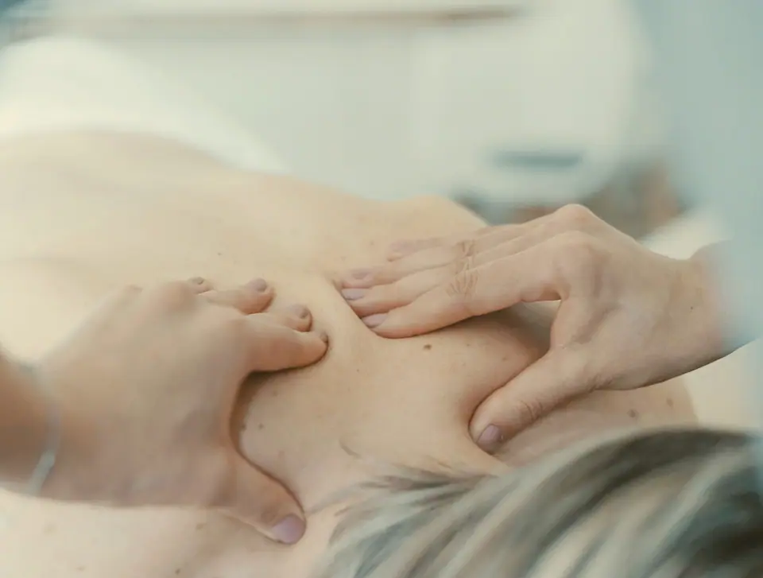

<!-- Pegar y escribir el alt de cada foto. La de la portada: quitar loading="lazy" y poner fetchpriority="high". -->
<picture>
  <source type="image/avif" srcset="osteopatia-480.avif 480w, osteopatia-720.avif 720w, osteopatia-960.avif 960w" sizes="100vw">
  
</picture>
